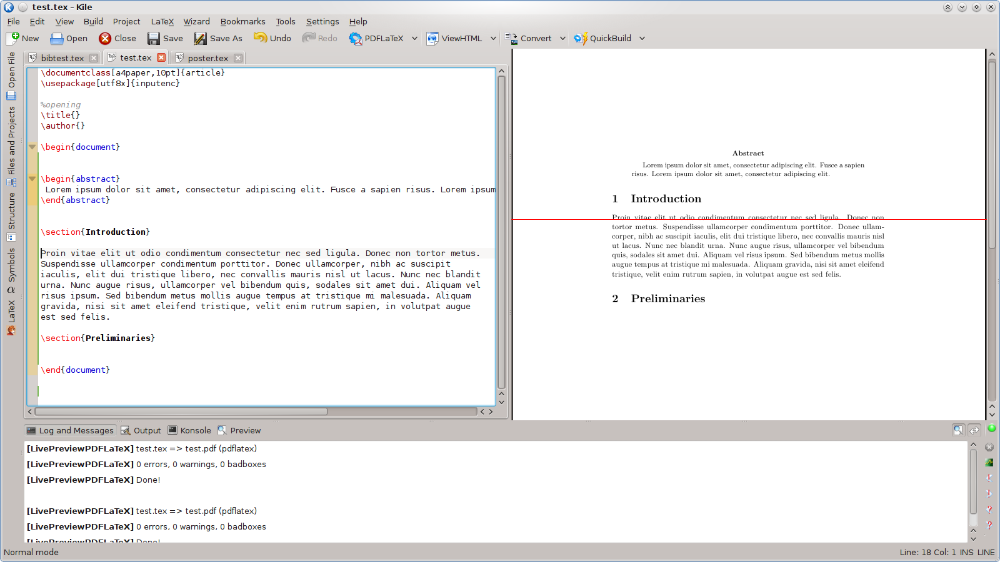

Qu’est-ce que Kile Live Preview ?
Kile est un éditeur puissant pour rédiger des documents en LaTeX. C’est LaTeX qui une fois le fichier compilé, génère un document PDF avec une mise en forme parfaite et pouvant contenir des formules mathématiques. A chaque modification il faut donc :
- Revenir au fichier
.texpour effectuer la modification, puis enregistrer - Compiler le fichier
- Visualiser le résultat sur le PDF qui s’ouvre dans une nouvelle fenêtre
- Entrevoir les futures modifications à apporter, fermer la fenêtre, et réitérer 1
Et ainsi de suite…
Petite digression
La raison pour laquelle beaucoup de gens ne se mettent pas au LaTeX est que c’est un outil de rédaction “peu intuitif” contrairement aux logiciels WYSIWYG tels que “Word” qui permettent de voir directement les changements effectués sur le fichier. Ces logiciels sont très bien pour le traitement de texte classique, mais on en entrevoit rapidement les limites dès lors que l’on souhaite rédiger des documents scientifiques. LaTeX quant à lui a été spécialement conçu pour cela, mais est un langage de programmation à part entière donc n’est pas simple à prendre en main au début. Des alternatives telles que LyX proposent de combiner les avantages des deux écoles, mais à mon humble avis on perd la puissance d’ajustement et de qualité que permet la rédaction directe en LaTeX.
Le problème du LaTeX est que, même une fois le langage maîtrisé, on l’a vu, il faut systématiquement recompiler pour visualiser le résultat, et cela constitue une perte de temps non négligeable lorsque l’on rédige des documents longs, comme une thèse de l’ordre de 300 pages !
La solution s’appelle Kile Live Preview qui permet de réunir au sein de l’éditeur Kile :
- une zone texte(à gauche)
- une zone de visualisation(à droite)
Comme un dessin vaut mieux qu’un long discours, voilà une capture d’écran de la fenêtre qui est maintenant coupée en deux.

Vous l’aurez compris, le gros avantage est qu’on peut avoir un oeil à la fois sur le code et sur le rendu. De plus les deux volets sont synchronisés, ce qui signifie que dès que vous effectuez une modification dans le code, Kile recompile automatiquement et vous affiche le résultat “en Live” en faisant correspondre l’emplacement dans le code avec la ligne de positionnement (en rouge) du rendu.
Alors, convaincus ? 😉
Installation de Kile Live Preview
Je vais décrire la démarche à suivre dans le cas où tout fonctionne du premier coup, ce qui, en informatique qu’on se le dise, n’arrive pas très souvent… Je terminerai donc cet article par ma chasse aux bugs personnelle, m’ayant coûtée quelques heures. Néanmoins si vous suivez la procédure qui suit vous ne devriez pas rencontrer les même bugs que moi, car je l’ai adaptée en conséquences.
- Installation de Qt
L’installation a déjà été décrite dans un précédent article.
- Installation de CMake
CMake est un outil de génération de Makefile, tout comme l’est QMake dont j’ai déjà décrit l’installation. Pour l’installer il suffit de se rendre sur lesite officiel, et de télécharger la dernière version disponible, à ce jour cmake-2.8.10.2.tar.gz et de l’extraire dans un dossier :
cd
mkdir CMAKE
cd CMAKE
tar -xzf cmake-2.8.10.2.tar.gzOn se place dans le dossier extrait et on configure l’installation :
cd cmake
./configure --prefix=$HOME/CMAKE/ --qt-guiPuis on compile et on installe :
make
make installEnfin on va modifier la variable PATH de manière à pouvoir lancer l’exécutable directement par son nom. Ouvrez le fichier .bashrc (qui se situe en général dans votre $HOME) et copiez la ligne suivante en fin de fichier :
PATH=$PATH:$HOME/CMAKE/bin/Fermez le fichier et dans un terminal rafraîchir en tapant :
bashEt voilà l’installation de l’outil CMake est terminée.
- Installation des librairies KDE
Il est nécessaire d’avoir une version récente (>= 4.6), pour connaître votre version actuelle tapez dans un terminal :
kde-config -vLa dernière version à ce jour est kdelibs5-dev
sudo apt-get install kdelibs5-dev- Installation de Poppler
Voilà l’étape que j’avais omise et à l’origine d’un seg fault qui m’a fait suer plusieurs heures. Poppler est une librairie qui permet à Okular de visualiser des PDF, sans quoi je ne parvenais pas à avoir de rendu, et qui en prime me faisait crasher Kile.
Rendez-vous sur le site officiel et téléchargez comme d’habitude la dernière version, l’extraire et se placer dans le dossier. Puis tapez les commandes suivantes :
./configure
make
make check
make installRemarque : si make check se solde par des échecs sur certains tests ce n’est pas forcément grave, poursuivez tout de même l’installation. Pour plus de détails sur celle-ci consultez le fichier INSTALL du dossier.
Si l’installation s’est bien déroulée les exécutables pdf devraient se trouver dans le dossier /usr/local/bin.
- Installation de git
Git est un gestionnaire de version très puissant, pour l’installer c’est très simple :
sudo apt-get install git-core- Récupération des sources de Kile et d’Okular
Ces deux logiciels sont en développement libre, c’est-à-dire que leur code source est disponible sur internet, sur des dépôts appelés dépôts git. On va donc dans un premier temps les récupérer :
cd
mkdir -p kile-livepreview/src
cd kile-livepreview/src
git clone git://anongit.kde.org/okular
git clone git://anongit.kde.org/kile -b master- Installation d’Okular
cd ..
mkdir build-okular
cd build-okular
cmake ../src/okular -DCMAKE_INSTALL_PREFIX=$HOME/kile-livepreview/install -DCMAKE_BUILD_TYPE="Debug"
make install -j 2Remarque : si un bug survient au cmake, voir éventuellement plus bas : bug n°1 et n°2.
Installation de Kile
cd .. mkdir build-kile cd build-kile cmake ../src/kile -DCMAKE_INCLUDE_PATH=$HOME/kile-livepreview/install/include/ -DCMAKE_INSTALL_PREFIX=$HOME/kile-livepreview/install -DCMAKE_BUILD_TYPE="Debug" make install -j 2Script de lancement de l’application Kile Live Preview
Les lignes suivantes doivent être copiées dans le fichier $HOME/kile-livepreview/run.sh :
#!/bin/sh
export KDEDIRS=$HOME/kile-livepreview/install/:$KDEDIRS
export KDEHOME=$HOME/kile-livepreview/.kde
export LD_LIBRARY_PATH=$HOME/kile-livepreview/install/lib64:$HOME/kile-livepreview/install/lib:$LD_LIBRARY_PATH
kbuildsycoca4 $HOME/kile-livepreview/install/bin/kileIl faut également rajouter à la suite des export le dossier Poppler (votre chemin complet vers celui-ci) aux variables d’environnement suivantes :
export PKG_CONFIG_PATH=$HOME/poppler-0.22.2:$PKG_CONFIG_PATH
export LD_LIBRARY_PATH=$HOME/poppler-0.22.2:$LD_LIBRARY_PATHEnfin il faut donner la permission d’exécution du script :
chmod +x $HOME/kile-livepreview/run.shFinalement pour lancer Kile vous tapez :
$HOME/kile-livepreview/run.sh… et priez pour que ça marche ! 🙂
- Chasse aux bugs !
Voici la liste des bugs que j’ai obtenu :
- Bug n°1: Lors de l’utilisation du
cmakej’obtenais l’erreur suivante :
CMake Error: ERROR: cmake/modules/FindKDE4Internal.cmake not foundUn outil intéressant pour savoir à quelle librairie appartient un fichier donné est apt-file
sudo apt-get install apt-filePour rechercher à quelle librairie est rattaché un fichier de nom <filename> il suffit alors de taper apt-file search <filename> donc dans mon cas :
apt-file search FindKDE4Internal.cmakeEt la sortie correspondante est :
kdelibs5-dev: /usr/lib/kde4/share/kde4/apps/cmake/modules/FindKDE4Internal.cmakeOn comprends alors qu’il est nécessaire d’installer la librairie kdelibs5-dev :
sudo apt-get install kdelibs5-devLe bug est corrigé.
- Bug n°2: Toujours au
cmakel’erreur suivante est survenue :
Could NOT find QImageBlitz (missing: QIMAGEBLITZ_INCLUDES QIMAGEBLITZ_LIBRARIES)A partir de la logithèque Ubuntu j’ai installé libqimageblitz4 et libqimageblitz-dev, le bug fut alors corrigé.
- Bug n°3: pas des moindres ! Crash de Kile à l’ouverture d’un fichier
.tex
Could not open /home/kevin/kile-livepreview/.kde/share/apps/kile/livepreview/preview-ONaCzE//essai.pdfLe fichier essai.tex était un simple exemple minimaliste :
\documentclass[12pt]{article}
\begin{document}
\section*{My section}
Test
\end{document}Puis un simple clic dans la fenêtre faisait crasher l’application. J’ai alors examiné le backtrace dont je n’extrais que les lignes intéressantes :
Application: Kile (kile), signal:
Aborted Using host libthread_db library "/lib/x86_64-linux-gnu/libthread_db.so.1".
[Current thread is 1 (Thread 0x7f60c152c780 (LWP 21865))]
Thread 1 (Thread 0x7f60c152c780 (LWP 21865)): [KCrash Handler]
#6 0x00007f60bcef6425 in __GI_raise (sig=<optimized out>) at ../nptl/sysdeps/unix/sysv/linux/raise.c:64
#7 0x00007f60bcef9b8b in __GI_abort () at abort.c:91
#8 0x00007f60be75150b in qt_message_output(QtMsgType, char const*) () from /usr/lib/x86_64-linux-gnu/libQtCore.so.4
#9 0x00007f60be7518bf in ?? () from /usr/lib/x86_64-linux-gnu/libQtCore.so.4
#10 0x00007f60be751a64 in qFatal(char const*, ...) () from /usr/lib/x86_64-linux-gnu/libQtCore.so.4
#11 0x00007f6096a49841 in Okular::DocumentPrivate::openDocumentInternal (this=0x1b9b160, offer=..., isstdin=false, docFile=..., filedata=...) at /home/kevin/kile-livepreview/src/okular/core/document.cpp:904
#12 0x00007f6096a5193d in Okular::Document::openDocument (this=0x1b33b30, docFile=..., url=..., _mime=...) at /home/kevin/kile-livepreview/src/okular/core/document.cpp:1996
#13 0x00007f6096d2409e in Okular::Part::openFile (this=0x1941030) at /home/kevin/kile-livepreview/src/okular/part.cpp:1203On constate que l’erreur est survenue dans la fonction openDocumentInternal du fichier document.cpp et que celle-ci est levée par l’exception qFatal. En allant voir à la ligne correspondante du fichier on voit que c’est cette ligne qui provoque l’exception :
Q_ASSERT_X( m_generator, "Document::load()", "null generator?!" );"Ce qui signifie que le pointeur m_generator est le pointeur NULL ! Pour comprendre pourquoi, il m’a fallu repérer où ce pointeur était initialisé, c’est le rôle de la fonction loadGeneratorLibrary, et plus précisément de cette ligne :
Generator * generator = factory->create< Okular::Generator >( service->pluginKeyword(), 0 );En affichant la valeur de la variable service->pluginKeyword() j’ai constaté que celle-ci était vide ! Donc qu’il devait certainement manquer un plugin quelque part. Afin de savoir de quel plugin il s’agissait j’ai affiché le nom de la QString service->name()
qDebug("%s",service->name().toAscii().data());Ce qui me renvoya "Poppler". En effet aucun dossier de ce nom ne figurait dans le dossier build_okular/generators et pourtant il est présent dans les sources src/generators. Autrement dit lors du cmake la librairie Poppler n’a pas été prise en considération (comme en témoignait le Makefile dans lequel seule la librairie Poppler ne possédait pas de cible), et pour cause : je ne l’avais pas installé au préalable comme il l’est fortement recommandé sur le site d’Okular, qui en a besoin pour certaines manipulations du format PDF.
J’ai donc tout supprimé et j’ai recommencé l’installation par dépot Git après avoir installé la librairie Poppler.
Si chez vous d’autres bugs surviennent, laissez moi un commentaire ou signalez le ici.